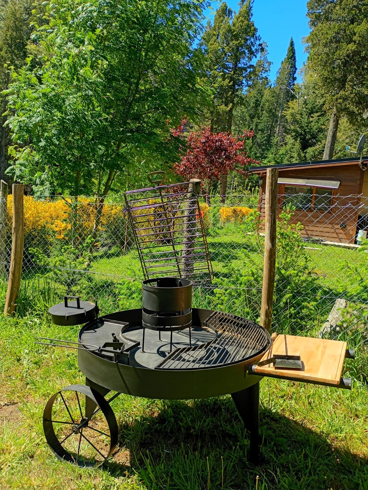

Experiencias
Cada estación tiene su propia forma de sentirse.
Desde una tarde junto al fogón hasta paisajes nevados, la cabaña es un punto de partida para disfrutar Llao Llao.

Fogón y parrilla
El jardín cuenta con un fogón y parrilla para compartir una comida al aire libre, entre árboles y tranquilidad.
Invierno
La cabaña rodeada de nieve y los bosques de Llao Llao crean una base cálida para recorrer Bariloche y regresar a descansar.
Verano y otoño
Senderismo, ciclismo, paseos por el lago y tardes en el jardín. Consultanos por recomendaciones para armar tu plan.